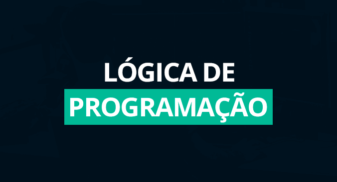
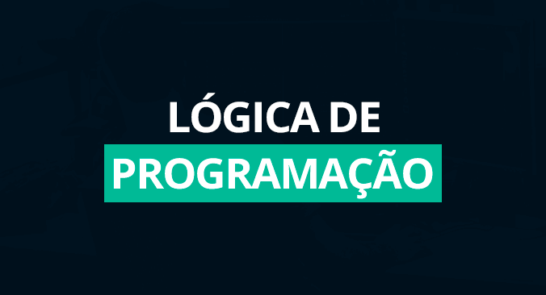

Ei! Eu sou Josiberto Domigues
Desenvolvendor de projetos em Python & Django
.png)
Hey, sou Josiberto eu acredito que o mundo está sendo impactado com as grandes tecnologias que estão surgindo no mercado de trabalho, diante desse cenário, me vejo fazendo uma pergunta, de qual maneira eu posso entrar nesse mercado de tecnologia? O que precisa saber desenvolver software, programas, sites, aplicativos...etc
Foi a partir desses perguntas que eu encontrei um universo totalmente novo e totalmente ao meu alcance. O universo da programação e desenvolvimento de software.
Tenho 32 anos e consegui enxergar esse magnífico universo, no qual podemos criar aplicativos e programas para facilitar, agregar valores e transformar as vidas pessoas, isso é muito legal. Comecei minha jornada estudando alguns assuntos como lógica de programação e depois fui para algums linguagens de programação como HTML, CSS e Python, no momento estou me dedicando as duas ferramentas Python e Django.
Experiência
- 2022 - 3º meses de Lógica de Programação
- 2022 - Cursando PythonPro
Portfólio
 



Contato
jtdomingues@icloud.com
Habilidades